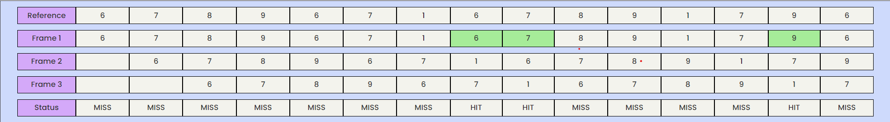

Advantages
- Often more efficient than other algorithms
- It helps in Full analysis.
Disdvantages
- It necessitates the implementation of additional data structures.
- It is more expensive and complex.
Examples
Consider the Pages referenced by the CPU in the order are 6, 7, 8, 9, 6, 7, 1, 6, 7, 8, 9, 1, 7, 9, 6

- As in the above figure shown, let there are 3 frames in the memory.
- First, all the frames are empty. 6, 7, 8 are allocated to the frames, the page fault occurs.
- Now, 9 comes and replaces 6 which is used the earliest, page fault occurs.
- Then, 6 replaces 7, 7 replaces 8, 1 replaces 9, page fault occurs.
- Then 6 comes which is already present, page hit occurs.
- Then 7 comes and page hit occurs.
- Then 8 replaces 1, 9 replaces 6, 1 replaces 7, and 7 replaces 8, page fault occurs.
- Then 9 comes and page hit occurs.
- Then 6 replaces 1 and page fault occurs.
- The number of Page Faults = 12
Working Example
Instruction: For a reference string{a,b,c,d}, Enter in the format {a b c d}
Warning: The Reference String cannot be NEGATIVE and the Number of frames should be more than 0!